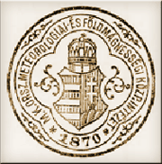

Az éghajlat a meteorológiai elemek sokaságának statisztikai elemzése révén írható le, viszont a növények életciklusának alakulása, valamint a növényi produkció összegzi a környezeti hatásokat, az időjárási elemek összhatását mutatja. Így a növény kiváló meteorológiai eszköz az éghajlat, az éghajlat változásának jellemzésére.
fenológia = megjelenéstan
A (fito)fenológia a növények környezeti viszonyoktól függő, szabályszerű egymásutánban bekövetkező jelenségeinek vizsgálatával foglalkozó tudomány. A fenológiai jelenségek a növény fejlődésének látható jelei, a fenológiai fázisok az egyes élettani szakaszok határpontjai, melyek szabályszerű rendben követik egymást, ezért hű képet adnak a fejlődés üteméről. A fenológia eredeti feladata a fejlődési fázisok naptári időpontok szerinti feljegyzése volt.
Az évtizedek során többször változott a növényfenológiai megfigyelések célja. A XX. század közepéig a természettudományos érdeklődés és az ismeretszerzés, a XX. század közepétől a mezőgazdasági termesztés föllendítése, a termés- és a vegyszeres növényvédelem-optimalizálás, a XXI. században pedig egyre inkább az éghajlatváltozás nyomon követése lett a fő cél.
A hőmérséklet emelkedésével az éghajlati övek eltolódnak, a mérsékelt szélességeken a vegetációs időszak hosszabbodik, a kártevők és kórokozók elterjedési területe is megváltozik. A növények komplex módon reagálnak az éghajat változására, így a hosszú fenológiai adatsorok hűen tükrözik a klíma változását.
Genfben a XIX. század eleje óta folyamatosan végeznek észleléseket a gesztenye lombosodásának kezdeti időpontjára vonatkozóan. Aono és Kazui 2008-ban megjelent tudományos cikkükben a Japánban tradicionálisan kultikus jelentőséggel bíró, s ezért Kiotóban különböző formában több mint egy évezrede dokumentált japáncseresznye virágzás időpontját rekonstruálták az i.sz. 801‒2005. közötti időszakra vonatkozóan. Korábbi kutatási eredményekre támaszkodva és korabeli naplók, krónikák, költemények és újság-cikkek adatait is felhasználva a kérdéses időszak éveinek több mint 60%-ára számszerűen előállították a márciusi-április közepi cseresznyevirágzás időpontját, s az így nyert adatbázis alapján elemezték a területre jellemző éghajlatingadozásokat.
A természethez a mainál sokkal közelebb élő és attól sokkal jobban függő ember mindig is figyelte az időjárás és a természet folyamatait, a növények évenkénti fejlődését, az állatok viselkedését. Számos népi időjárási megfigyelésünk kapcsolódik növényekhez és állatokhoz. Február 19-én például a pacsirta megszólalását várták, mert az korai tavaszt ígért. Március 19-én, József napon a fecskéket megérkezését várták és ekkor engedték ki a méheket is először. Úgy tartották, hogy ha a fecskék még Szent Mihály napján, szeptember 29-én sem mentek el, akkor hosszú ősz várható. Egyes napok időjárásából pedig a várható termésre következtettek: Gyertyaszentelő Boldogasszony napján, február 2-án például a Bács megyei Topolyán azt tartották, hogy amilyen hosszú jégcsapok lógnak az ereszről, olyan hosszú kukoricacsövek teremnek majd. Mátyás napján, február 24-én a hideg idő jó termést ígért, az eső pedig jégverést és savanyú szőlőt jelentett.
Carl Linné (1707-1778) az alapvető botanikai rendszerező munkája mellett évenként adatokat gyűjtött a vadmadarak költözésének és visszatérésének időpontjáról. Följegyezte, hogy mikor áll be a tavaszi olvadás, melyek az elsőként nyíló tavaszi növények és mikor hozzák termésüket. Többéves megfigyeléseivel Linné megalapította a fenológia tudományát.
Charles Morren (1807-1858), a Liege-i Egyetem botanika professzora használta először tudományos cikkben a „fenológia” kifejezést.
Mivel az időjárás és a növények fejlődése közötti szoros kapcsolat nyilvánvaló volt, a XIX. század második felében megalakuló nemzeti meteorológiai szolgálatok mérési programjában szerepelt a növények megfigyelése is. A XX. század második felében a nemzeti hálózatok nagyobb térségeket átfogó hálózatokká szerveződtek. Sokfelé, a világ fejlett országaiban is, a meteorológiai szolgálatok szervezésében ma is folyamatosan zajlanak a megfigyelések, vannak professzionális és növekvő számban önkéntes hálózatok is. A XX. század végén, a XXI. század elején azonban az automatizálás előre törésével a megfigyelések sokfelé háttérbe szorultak, a hiányzó adatokat számítógépes modellezéssel és műholdfelvételekkel próbálják pótolni. A műholdfelvételekből a hagyományos fenológiai fázisok megfigyelésére nincs lehetőség, egy úgynevezett tájképi fenológiai skála alkalmazása szükséges, mely alapján a „tavasz kezdete”, „nyár kezdete”, „ősz kezdete” és „tél kezdete” állapotok jelennek meg.
A kutatások szerint Európában a tavaszi-nyári fenológiai fázisok időpontjai 10 évenként mintegy 2,5 nappal korábbra kerülnek, míg az őszi elszíneződés, levélhullás időpontjaiban nincs számottevő trend.
Hazánkban már Kitaibel Pál (1757-1817) botanikai és terepmunkája során följegyezte a fajok virítási idejét, időtartamát, melyből az élőhelyek eltérő éghajlati adottságaira következtetett.
 1870-ben, az Országos Meteorológiai Szolgálat jogelődjének, a Meteorológiai és Földdelejességi Magyar Királyi Központi Intézet alapításakor létesült a növényfenológiai megfigyelő hálózat. Az akkori évkönyvekben 1871-1885. között 57 helyről vannak megfigyelések, hosszabb (legalább 7 éves) adatsor Bakonybél, Eger, Gospic, Körmend, Kőszeg, Nagy-Szeben, Oravica, Pécs és Török-Becse településeken állt elő. Ezt követően 1910-ben a Magyar Földrajzi Társaság, majd 1934-ben az Erdészeti Kutató Intézet létesített megfigyelő hálózatot.
1951-ben az immár Országos Meteorológiai Intézet néven futó Meteorológiai Szolgálat szervezett fenológiai megfigyelő hálózatot. Túlnyomórészt vadon termő növények megfigyelését végezték mintegy 200 helyen, míg a mezőgazdasági növényeket 13 helyszínen, mezőgazdasági kutatóintézetekben, fajtakísérleti állomásokon figyelték meg. 1965-ben a megfigyelőhálózatot felújították, bővítették, így ekkor 34 növényfaj szerepelt a listán 80 helyszínen. 1982-ben új alapokra helyezték a fenológiai hálózatot, a megfigyeléseket a MÉM-NAK növényvédő szakemberei végezték 2001-ig.